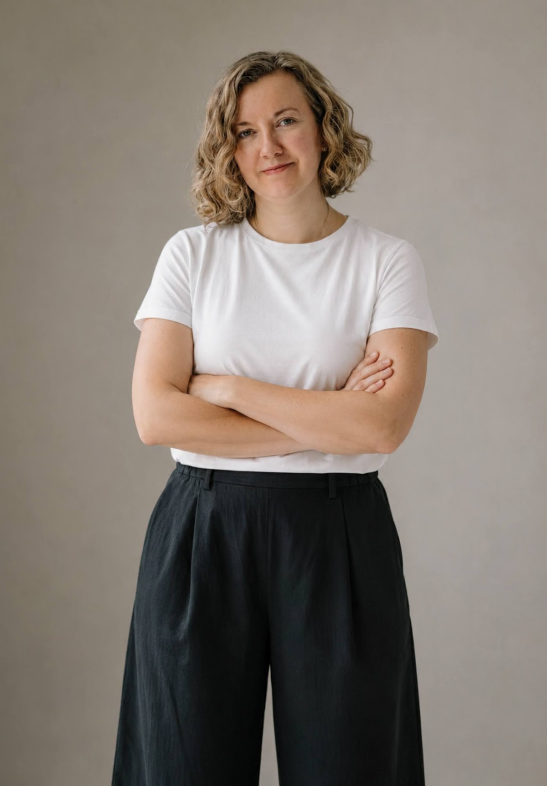

Sanita Reinsone
I am a humanities researcher interested in digital humanities, digital cultural heritage, citizen science and participatory research methods. I also study folklore, life-writing traditions and oral history.
I am a tenured associate professor at the Faculty of Humanities, University of Latvia, and head of the Digital Humanities Centre.

Research
Academic presentations
All academic presentationsConference presentation · ISFNR2026
Restless Spirits, Restless Places: Landscape Agency in Smiltene’s Demonological Heritage
Conference poster · ISFNR2026 · Sanita Reinsone and co-authors
Digital Infrastructures for Folk Narrative Research: Mapping Northern European Resources
Plenary discussion · DARIAH Annual Event
Digital Arts and Humanities With and For Society: Building Infrastructures of Engagement
Conference presentation · CLARIN–DARIAH Spring Conference
Towards DARIAH-LV
New initiative
Science communication · Public engagement
A digital platform turning research and datasets into interactive games.